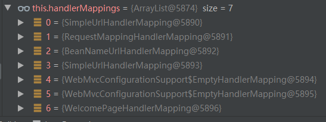
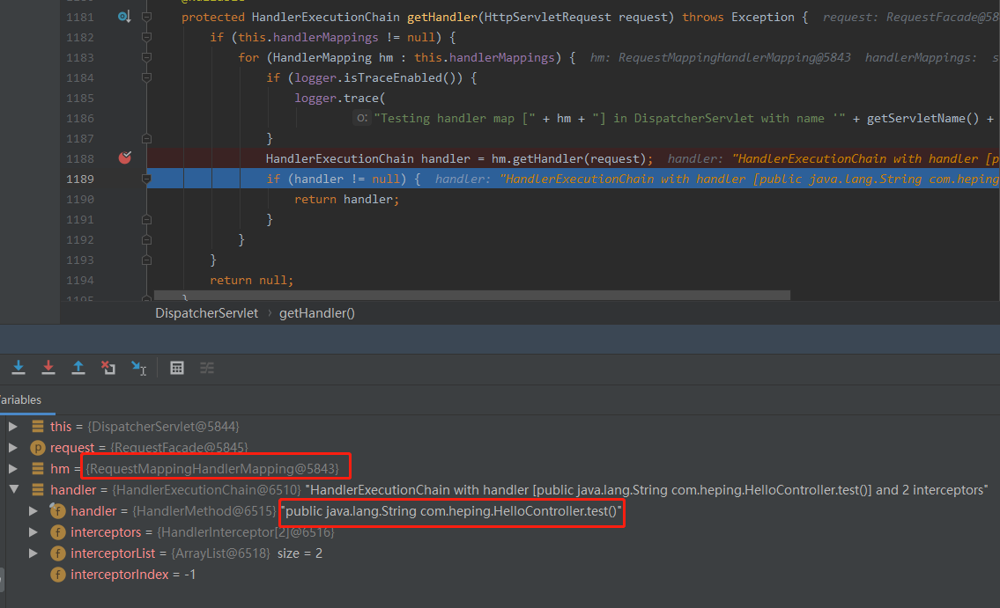
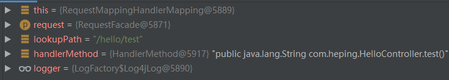
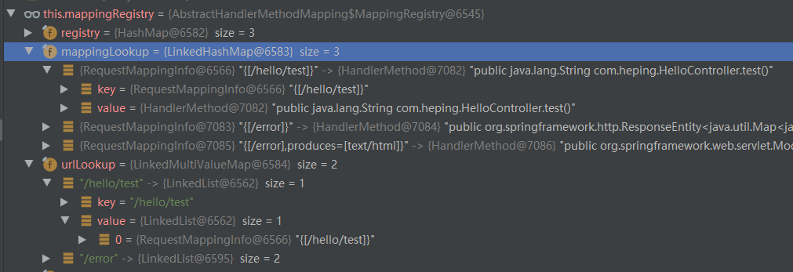
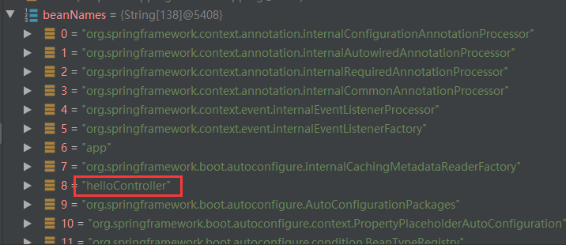

絮叨几句
这是一篇探究源码的文章，想学习一下优秀框架的设计思路，spring的功能太多了，一下子就看完也不可能，也没那个能力，这里就以springMVC中路由映射注解@RequestMapping为切入点，看它是怎么工作的。
学习源码时，方法很重要！！！不建议直接打开源码自己闷头看，这样会很浪费时间，你需要先理清作者的设计思路，再一点点的看明白，会很浪费时间，如果有其它大佬写过你想学习的点，那你完全可以先看下TA的文章，先了解一下大致的结构，再带着自己的疑问，去看源码，这样会事半功倍的，我这篇文章便是如此，全程参观了简书-有点胖的小乐乐写的分析文章，再结合源码调试来学习。
每个人的思路都是不一样的，前面大佬写的挺棒，但是我看的时候是比较吃力的，因为和我的思路差别太大，并且我觉得后面复习时很困难，所以才又写了一篇。前面也说了，学习时要带着问题，不然都没有目的那会很迷茫，不知道到底应该看哪里，所以通篇会以问题的形式递进，从开始一步步去探索源码，篇幅有点长，如果你只想知道流程，那看完问题4就可撤了😀😀😀，后面只是更一步探索而已 ，并不会帮助你解决实际问题，所以。。。看个人需求吧
问题1：springboot为什么能开箱即用MVC?
答：因为springboot在APP启动时，自动为我们配置了MVC需要的配置
在org.springframework.boot.autoconfigure.web.servlet.DispatcherServletAutoConfiguration有如下代码
1 |
|
springboot在这里new了一个DispatcherServlet类的实例，这个类都很熟悉，它位于spring-webmvc package中，是用来处理http请求的，这样APP就有了处理http请求的能力。
对于MVC应用，还要初始化MVC配置，springboot提供了一个org.springframework.boot.autoconfigure.web.servlet.WebMvcAutoConfiguration类，在这个类中完成了MVC需要的配置，springboot之所以能直接运行MVC APP，原因就在这里。
问题2：如何根据Url找到对应的Controller，进而找到对应的方法处理请示？
答：前面说过，DispatcherServlet是处理所有请求的入口，具体方法是doDispatch，代码如下
1 | /** |
注释并不难理解，都是很简单的英文，简单来说就是该方法是真正将请求映射到对应handler，handler是实现了HandlerMappings接口的实例，程序会去轮询已经注册过的handler，从而找到合适的handler来处理请求。
那接下来看getHandler是如何实现的
1 | protected HandlerExecutionChain getHandler(HttpServletRequest request) throws Exception { |
如上面注释中所述，这里轮询了注册过的HandlerMapping实例，分别调用getHandler方法，尝试找到合适的handler，咱们都知道开发MVC APP时用@ReauestMapping注解标注方法响应什么Url，调试下来，会发现，在IOC容器中已经注册了多个HandlerMapping的实现类，如下图


1. RequestMappingHandlerMapping是什么时候注册进来的？看问题3
2. RequestMappingHandlerMapping的getHandler又是怎么处理的？看问题4
问题3：RequestMappingHandlerMapping是怎么注册的呢？
答：在第一个问题中，说过springboot通过WebMvcAutoConfiguration完成了MVC的配置，从而能处理MVC请求。
而在该类中，存在一个静态类public static class EnableWebMvcConfiguration extends DelegatingWebMvcConfiguration，这个静态类有如下方法
1 |
|
可以看到这个方法使用注解@Bean标，在APP启动时，IOC容器会扫描并创建实例将其加载到容器中以备使用，由于这里调用的父类DelegatingWebMvcConfiguration的方法，所以再去看这个类继承的类，位于spring-webmvcpackage中，具体位置为org.springframework.web.servlet.config.annotation.DelegatingWebMvcConfiguration，然而DelegatingWebMvcConfiguration这个类并没有该方法，不过该类继承了org.springframework.web.servlet.config.annotation.WebMvcConfigurationSupport类，所以咱们继续找，果然WebMvcConfigurationSupport类中有具体实现
1 |
|
可以看到new了一个RequestMappingHandlerMapping出来，继而通过@Bean注解提供给了IOC容器，所以到这里咱们知道springboot中如何初始化RequestMappingHandlerMapping了，接下来要看问题2最后三个问题中的第二个了，RequestMappingHandlerMapping是如何获得handler的。
问题4：RequestMappingHandlerMapping的getHandler怎么工作的？
答：RequestMappingHandlerMapping中并没有getHandler的实现，具体的代码是在其继承的抽象类org.springframework.web.servlet.handler.AbstractHandlerMapping中，代码如下
1 | public final HandlerExecutionChain getHandler(HttpServletRequest request) throws Exception { |
可知AbstractHandlerMapping调用了getHandlerInternal方法，而getHandlerInternal方法的实现在org.springframework.web.servlet.handler.AbstractHandlerMethodMapping中（这里插一句，抽象类的设计结构很棒有木有，先是一个顶层的handlerMapping映射Controller，再是一个继承了该类的寻找方法的AbstractHandlerMethodMapping，层层往下，不同层次的功能，通过不同抽象类进行分割，都可以让开发者自定义，佩服），代码如下
1 | protected HandlerMethod getHandlerInternal(HttpServletRequest request) throws Exception { |
这里看变量名字就比较好理解，先从request中找到路径，根据路径匹配对应的controller和method，调试截图如下

可以看到，根据路径“/hello/test”定位到了HelloController中的test方法，找到了处理请求的方法，后面的流程就是调用该方法，处理请求，进而返回响应结果，比如在测试代码中，/hello/test返回的是一个jsp模板，执行完test方法后会返回ResourceHttpRequestHandler对象，由浏览器渲染html页面。
到这里，其实已经知道springMVC通过url映射Controller处理请求的流程了，如果只想知道处理流程的童鞋，可以ctrl+w了。😂 😂 😂
不过如果有足够的好奇心，可能还会有下面的问题
问题5：问题4中是怎么通过url找到对应的Controller和method的呢？
答：因为在APP启动时，springboot已经遍历扫描了所有注册的Controller，进而扫描到所有定义的路径，存储到集合中，所以当请求到达时，可以直接从已经存在的集合中找到对应的Controller和method
还是看源码，咱们看AbstractHandlerMethodMapping中定义的getHandlerInternal方法，这个方法中，又调用了lookupHandlerMethod寻找处理请示的method，源码如下
1 | protected HandlerMethod lookupHandlerMethod(String lookupPath, HttpServletRequest request) throws Exception { |
可以看到，根据请求路径“/hello/test”去mappingRegistry中匹配对应的handler，调试发现mappingRegistry信息如下

是不是清楚明了呢，咱们通过@RequestMapping注解标注的路径都在这里面存过了，那mappingRegistry是什么呢
1 | private final MappingRegistry mappingRegistry = new MappingRegistry(); |
mappingRegistry是AbstractHandlerMethodMapping中MappingRegistry的实例，因为AbstractHandlerMethodMapping实现了InitializingBean接口，实现了该接口的类在实例化时，spring会自动调用afterPropertiesSet方法，具体的原理，请参考博客园网友的作品（传送门）
AbstractHandlerMethodMapping实现的afterPropertiesSet代码如下
1 | public void afterPropertiesSet() { |
再看initHandlerMethods的实现
1 | protected void initHandlerMethods() { |
initHandlerMethods方法中，
1 | String[] beanNames = (this.detectHandlerMethodsInAncestorContexts ? |
获取IOC容器中注册的对象，咱们程序中的类也在其中，看下图

之后会轮询这些对象，判断其是否为处理请求的handler类型
1 | if (beanType != null && isHandler(beanType)) { |
如果是，则在detectHandlerMethods中用反射的方式获取类信息，如方法和方法注解这些，根据咱们标注的@RequestMapping，将Url与method，并将其注册到mappingRegistry对应的集合中，所以就如在问题2所述中，当http请求到来时，springMVC就可以根据Url来找到对应的Controller和method，处理和响应请求。
好了，到这里我觉得可以结束了，篇幅挺长的，如果你看到了这里，那请接受我的敬意，真的很有毅力，希望能一起进步，用知识武装自己，让自己变得更好更强大💪
参考文章简书-有点胖的小乐乐